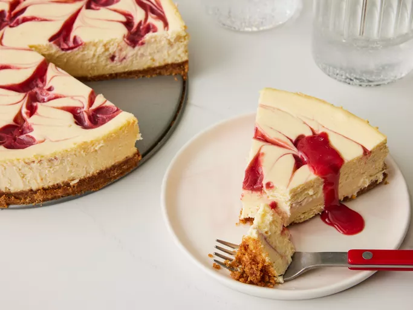

Cheesecake

Nutrition Facts(per serving)
- 459 Calories
- 30g Fat
- 42g Carbs
- 9g Protein
Ingredients
For the crust
- 1 ¼ cups graham cracker crumbs
- ⅓ cup butter, melted
- ¼ cup white sugar
- 2 teaspoons ground cinnamon, or to taste
For the filling
- 2 (10 ounce) packages frozen sweetened sliced strawberries, thawed and drained
- 1 tablespoon cornstarch
- 3 (8 ounce) packages cream cheese, softened
- 1 (14 ounce) can sweetened condensed milk
- ¼ cup lemon juice
- ½ teaspoon vanilla extract
- 3 large eggs
- 1 tablespoon water (Optional)
Directions
- Gather all ingredients.
- To make the crust: Combine graham cracker crumbs, butter, sugar, and cinnamon in a bowl; mix well. Press onto the bottom of an ungreased 9-inch springform pan.
Place in the refrigerator to chill for 30 minutes. Preheat the oven to 300 degrees F (150 degrees C).
- To make the filling: Place strawberries and cornstarch into a blender; cover and puree until smooth.
- Pour strawberry sauce into a saucepan and bring to a boil over high heat. Boil and stir until sauce is thick and shiny, about 2 minutes.
Set aside 1/3 cup strawberry sauce; cool. Cover and refrigerate remaining sauce for serving.
- Beat cream cheese in a mixing bowl with an electric mixer until light and fluffy; gradually beat in condensed milk.
Mix in lemon juice and vanilla extract, then beat in eggs on low speed until just combined.
- Pour 1/2 of the cream cheese mixture over crust; drop 1/2 of the reserved strawberry sauce by 1/2 teaspoonfuls on cream cheese layer.
- Carefully spoon remaining cream cheese mixture over sauce; drop remaining strawberry sauce by 1/2 teaspoonfuls on top.
- Cut through the top layer only with a knife to swirl strawberry sauce.
- Bake in the preheated oven until the center is almost set, 45 to 50 minutes.
- Cool on a wire rack for 10 minutes. Carefully run a knife around the edge of the pan to loosen; cool for 1 hour at room temperature.
Refrigerate at least 4 hours to overnight before serving.
- Serve reserved strawberry sauce with cheesecake. If sauce is too thick, stir in water.
About the Cheesecake
Cheesecake has a graham cracker crust and creamy filling with swirls of sweetened strawberry sauce. It's perfect for any special occasion!
This cheesecake recipe is easy, impressive, and the perfect sweet treat to make at home.
Home